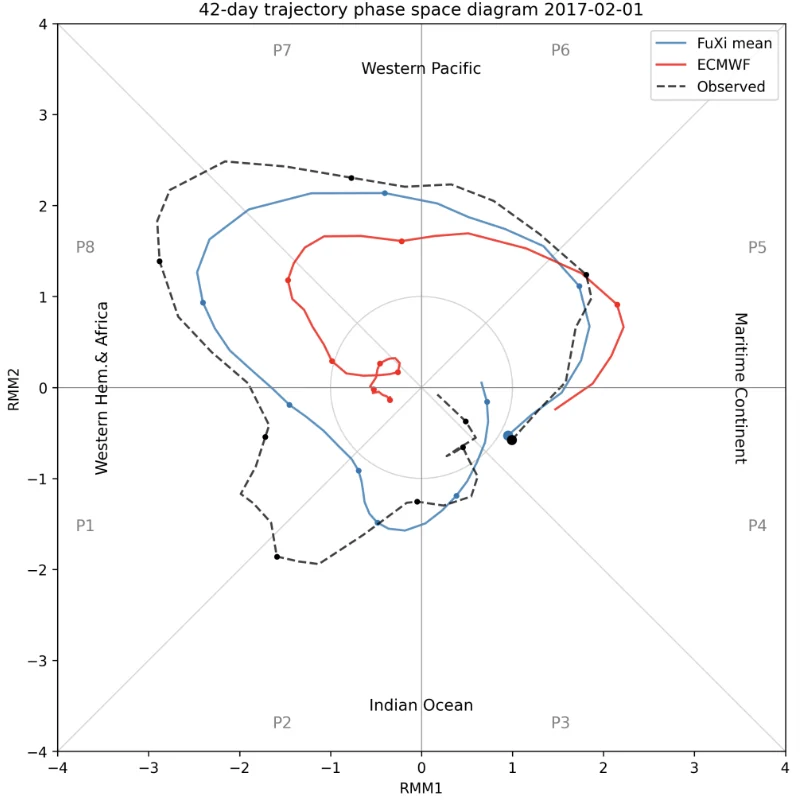
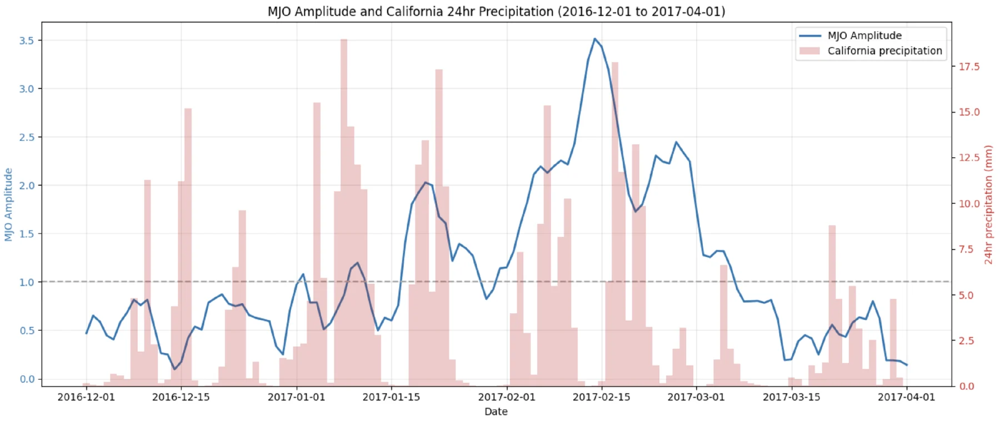

Study 2 of 4 · Predict
On the importance of historical context and bias correction in deep learning MJO prediction models
npj Climate and Atmospheric Science 9, 193 (2026) · Open access · doi.org/10.1038/s41612-026-01459-9
The Madden–Julian Oscillation (MJO) is the main source of weather predictability 2 to 6 weeks ahead, and it shapes atmospheric rivers and Sierra Nevada snowpack. We paired FuXi-S2S, an AI foundation model for global subseasonal forecasting, with state-of-the-art time-series and bias-correction models. The corrected forecasts set a new benchmark of 40 skillful days, and the experiments answer two open questions: whether a longer MJO history helps, and whether bias correction works for AI models the way it does for physics-based models.
40 days
Skillful MJO horizon (bivariate correlation ≥ 0.5) after LSTM bias correction of FuXi-S2S, up from 37 days. Operational systems such as ECMWF reach about 30.
−11%
Reduction in forecast error (bivariate MSE) in weeks 5–6. For forecasts of a strong MJO the reduction is 19%.
9–12 days
Skill from MJO history alone, whether the model sees 1 day or 720 days of past behavior. The current state carries the predictive information.
Week 3+
Bias correction only starts to help after week 3 for the AI model. In earlier studies of physics models it helped from day 1.
Why it matters
For California water forecasting
- Lead time
Three more days of reliable guidance in weeks 3–6
The added lead falls in the range that matters for reservoir operations, drought preparedness and allocation planning.
- Trust
Know when to rely on a forecast
When FuXi-S2S predicts a strong MJO (amplitude ≥ 1), skill holds through the full 42 days. Weak-MJO forecasts are skillful to about 24 days. Forecasts started in May and September–February run past 40 days; March and summer starts are shorter.
- 2017 case
The February 2017 event was visible weeks ahead
In a case study from the project's briefing to California water managers, the AI model anticipated the strong mid-February MJO 3–4 weeks before its peak, in step with the run of heavy precipitation that stressed Oroville Dam. ECMWF underestimated its strength and ended it too early.
Why it matters
For model developers and funders
- Inputs
Invest in the initial state, not in longer history
Extended lookback windows add nothing, so better representation of the current atmosphere (moisture fields, resolution over the Maritime Continent) is the more promising direction. It also keeps operational systems simple.
- Evaluation
Separate model error from dataset mismatch
Verifying against Bureau of Meteorology indices instead of indices built from the model's own input data makes bias correction look much stronger: the LSTM cuts error 38% in weeks 1–2. Part of the gain reported for physics models likely comes from such mismatches.
- Next
Amplitude damping needs new training objectives
FuXi-S2S underestimates MJO amplitude and moves it too fast after week 3. Correction trades one error for the other, so fixing it requires changes to how AI models are trained, such as probabilistic losses and large ensembles.
Figures
Key results



Case study" loading="lazy">
Case study" loading="lazy">What we did
Data and methods
The MJO is tracked with the two Real-time Multivariate MJO (RMM) indices, computed from NOAA outgoing longwave radiation and ERA5 winds at 850 and 250 hPa over a 1979–2001 reference period. Our indices correlate at 0.91 with the Bureau of Meteorology's.
FuXi-S2S forecasts come from its public archive: 51-member ensembles out to 42 days, initialized every 3–4 days from 2002 to 2021. Models were trained on 2002–2017, validated on 2018 and tested on 2019–2021.
For the history test, TFT and TSMixer models received lookback windows from none to 720 days. For bias correction, mean-bias, linear-regression and LSTM models were trained separately for each lead time and phase group. Significance comes from 1,000-sample paired bootstrap tests.
Limits
Read with care
- FuXi-S2S was trained on 1950–2016, so skill measured over that period, such as the seasonality analysis, may be higher than for new years.
- Results are for one AI model and a three-year test period. Other architectures may show different biases.
- History may still carry information in fields the RMM indices do not capture, such as stratospheric winds or moisture.
Cite
Virji, K., A, G. & Velicogna, I. (2026). On the importance of historical context and bias correction in deep learning MJO prediction models. npj Climate and Atmospheric Science, 9, 193. https://doi.org/10.1038/s41612-026-01459-9